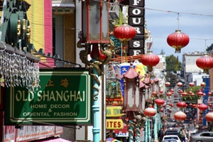

Your Tour Guide
The City by the Bay

San Francisco is located on the West Coast of the United States at the tip of the San Francisco Peninsula and includes significant stretches of the Pacific Ocean and San Francisco Bay within its boundaries.

Today, San Francisco is one of the top tourist destinations in the world, ranking 33rd out of the 100 most visited cities worldwide, and is renowned for its chilly summer fog, steep rolling hills, eclectic mix of architecture, and its famous landmarks,

including the Golden Gate Bridge, cable cars, and Chinatown. The city is also a principal banking and finance center, and the home to more than 30 international financial institutions,
| Demographic profile | 2010 | 2000 | 1990 | 1970 | 1940 |
|---|---|---|---|---|---|
| Non-Hispanic White | 48.5% | 49.7% | 53.6% | 71.4% | 95.0% |
| Asian | 48.5% | 49.7% | 53.6% | 71.4% | 95.0% |
| Black or African American | 48.5% | 49.7% | 53.6% | 71.4% | 95.0% |
| American Indian and Alaska Native | 48.5% | 49.7% | 53.6% | 71.4% | 95.0% |
| Native Hawaiian and Other Pacific Islander | 41.9% | 43.6% | 46.6% | 60.4%[117] | 92.5% |
| Some other race | 33.3% | 30.8% | 46.6% | 29.1% | 95.0% |
| Two or more races | 48.5% | 49.7% | 53.6% | 71.4% | 95.0% |
| Hispanic or Latino (of any race) | 15.1% | 14.1% | 53.6% | 11.6%[117] | 2.5% |